Representational State Transfer (REST), you will recall, is an increasingly popular architectural style for distributed hypermedia systems such as the Web. Central to the RESTful architecture style is the concept of resources identified by universal resource identifiers (URIs). Resources can be manipulated using a standard interface, such as HTTP, and information is exchanged using representations of these resources. Building web services using the RESTful approach is emerging as a popular alternative to using SOAP-based technologies for deploying services on the Internet, due to its lightweight nature.
More on REST |
RESTful web services are much simpler than the traditional SOAP-based ones. There is of course no SOAP and no WSDL, and definitely no WS-* standards – just simple message exchange over HTTP using any format you want: XML, JSON, HTML, etc. RESTful web services are really just a collection of web resources identifiable by URIs, which can be manipulated by a small number of operations – GET, PUT, POST and DELETE (corresponding to commons actions you can specify in a HTTP header). Because of this, “resource” is used throughout the article to mean a RESTful web service. |
NetBeans 6.0, with the addition of a specialized plugin, supports the rapid development of RESTful web services using JSR-311 (Java API for RESTful Web Services – JAX-RS) and Jersey, the reference implementation for JAX-RS. The IDE supports building and testing services, as well as creating client applications that access these services, and generating code for invoking web services (not only RESTful but also SOAP-based). The following are the RESTful features provided:
• Rapid creation of RESTful web services from Java Persistence API entity classes and patterns.
• Fast code generation for invoking web services such as Google Maps, Yahoo News Search, and StrikeIron services, by drag-and-dropping components from the RESTful component palette.
• Generation of JavaScript client stubs from RESTful web services for building client applications.
• Test client generation for testing RESTful web services.
• A logical view for easy navigation of RESTful web service implementation classes in your project.
In this article, we will outline the steps to use these features to create RESTful applications.
More on REST |
RESTful web services are much simpler than the traditional SOAP-based web services. There is of course no SOAP and no WSDL, and definitely no WS-* standards – just simple message exchange over HTTP using any format you want: XML, JSON, HTML, etc. RESTful web services are really just a collection of web resources identifiable by URIs, which can be manipulated by a small number of operations – GET, PUT, POST and DELETE (corresponding to commons actions you can specify in a HTTP header). Because of this, you will see me use resources to mean RESTful web services throughout the article. |
Getting the RESTful Web Services Plugin
Since we are tracking JSR-311 which is still an unfinished specification at the time of writing, the RESTful Web Services plugin is only available via the NetBeans 6.0 Plugin Manager from the Update Center. To download it, you need to have installed NetBeans 6.0 in the Web and Java EE or Complete releases. Once in the IDE, go to Tools>Plugins and install the plugin, as shown in Figure 1. You’ll then be ready to explore the various features available for developing and testing your RESTful applications.
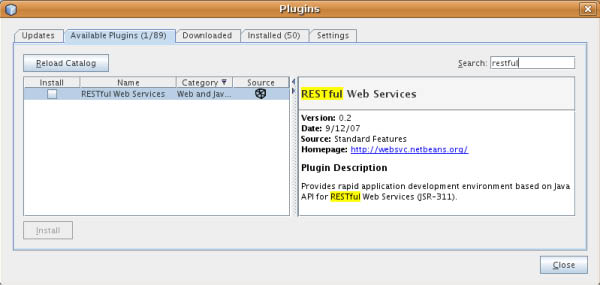
Figure 1. Downloading the RESTful Web Services Plugin from the Plugin Manager
The RESTful Web Services Plugin comes bundled with the latest Jersey libraries, so you do not need to install the Jersey runtime in your application server in order to run your applications.
A first RESTful Web Service
Start by creating a Web project with the type Web Application and default settings. From the Web project node, choose New>RESTful Web Services from Patterns. Figure 2 shows the first panel of the wizard. As you’ll see, three patterns are currently supported: Singleton, Container-Item and Client-Controlled Container-Item (see more about these in the “RESTful patterns” box). We will use the Singleton pattern to create a “Hello World” service. Click on the Next button to go to the panel shown in Figure 3.
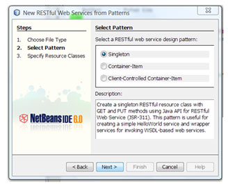
Figure 2. Pattern Selection Panel
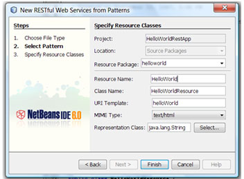
Figure 3. Setting up resource classes
In this panel, you can specify the package and resource names, and the MIME type for your resource. Enter “helloworld” in the Resource Package text field, and in Resource Name enter “HelloWorld”. The Class Name and URI Template fields will default to “HelloWorldResource” and “helloWorld”, respectively. Select text/html for the MIME Type, and click Finish to generate the code.
After the HelloWorldResource class is generated, the RESTful Web Services logical view will appear, as shown in Figure 4. Double click on the getHtml() method node, and the IDE will take you to the method in the Java editor. Modify the method as shown in Listing 1, to return an HTML document displaying “Hello World!”.
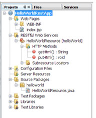
Figure 4. RESTful Web Services Logical View
| Listing 1. HelloWorldResource.java |
@UriTemplate(“helloWorld”) |
Taking a closer look at the generated HelloWorldResource.java class shown in Listing 1, notice the @UriTemplate(“/helloWorld”) annotation on the class definition. This annotation is what determines the URI for the resource. The @HttpMethod(“GET”) and @ProduceMime(“text/html”) annotation on the getHtml() method indicates to the Jersey runtime that this method should be called when an HTTP GET request is sent to the resource with text/html as the desired MIME type.
The HelloWorld project we created in this section is one of the sample applications bundled with the plugin. You can create the sample by choosing File>New Project>Samples>RESTful Web Services>Hello World.
We’ve completed our minimal service. In the next section we demonstrate how to test the service using the Test Client facility.
Testing the service
To test the HelloWorld service, right click on the project node and select Test RESTful Web Services. This action will deploy the application and bring up the test client in your browser, as shown in Figure 5. To test the service, click on the helloWorld node on the left-hand panel and click Test. Switch to the Raw View to see the HTML document. The Tabular View extracts all the URIs in the result document, and displays them as links. We will show an example of this later in the article. The Headers view shows all the information in the HTTP headers, and the HTTP Monitor, as expected, displays HTTP request and response messages.
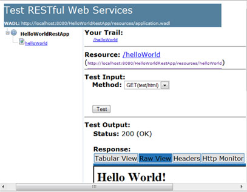
Figure 5. Test Client for our minimal web service
The Test Client generates its content based on the generated WADL (Web Application Description Language) file which is a description for all the RESTful resources in your project.
Generating RESTful web services from a database
In addition to generating code from RESTful patterns, you can generate a fully functional RESTful application from a database, leveraging the JPA support in NetBeans. To do this, we will need to generate the JPA entity classes from a database in the web project.
First create a web project called “CustomerDB”, keeping GlassFish V2 as the default server. From the project node, choose New>Entity Classes from Database and select jdbc/sample for Data Source from the drop-down list. A list of tables will appear in the Available Tables column. Select the CUSTOMER and DISCOUNT_CODE tables and click Add to include them in the Selected Tables column. Click Next to go the panel shown in Figure 6. Enter customerdb for Package. Next, create a persistence unit by clicking on the Create Persistent Unit button (you can leave everything as default in the dialog and click Create). Click Finish to generate the entity classes. After generation, you should see two Java classes, Customer and DiscountCode, in the customerdb package.
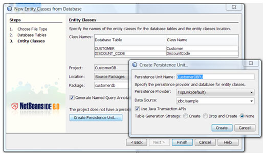
Figure 6. Entity Class Setup Panel
You are now ready to generate RESTful web services from the entity classes. Right click on the customerdb package node and choose New>RESTful Web Services from Entity Classes to bring up the New RESTful Web Services from Entity Classes wizard as shown in Figure 7. In this panel, simply click on Add All to include both entity classes for code generation. Click Next to go the next panel, shown in Figure 8.
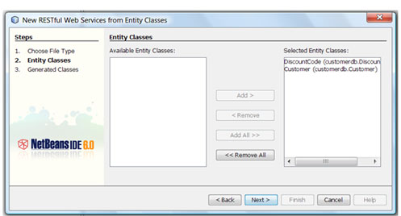
Figure 7. Entity Class Selection Panel
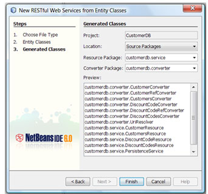
Figure 8. Resource Class Setup Panel
This panel displays a preview of the classes to be generated. The IDE uses the Container-Item pattern to generate the resource classes. For example, for the Customer entity class, the IDE generates a container resource called CustomersResource and an item resource called CustomerResource. Also, for each resource class, NetBeans creates a converter class which is used for generating the resource representation from the corresponding entity instance, e.g. CustomersConverter and CustomerConverter. Note that there are additional converter classes, e.g. CustomerRefConverter, for representing relationships.
Click Finish to generate all the classes indicated in the Preview area. You can test the generated RESTful web service by following the steps outlined in the previous section. Figure 9 shows an example output. The Tabular View displays a listing of all the URIs embedded in the returned document; you can navigate to them by clicking on each link.
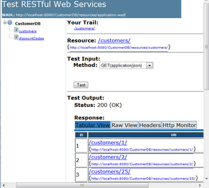
Figure 9. Testing
RESTful Web Services Generated from Entity Classes
Taking a closer look at the CustomersResource class (shown in Listing 2), notice that the getCustomer Resource() method has a @UriTemplate(“{customerId}”) annotation. This method is called a “sub-resource locator”, because it is used to return an instance of the CustomerResource class to handle the HTTP request, after the Jersey runtime matches the customerId in the URI to the pattern specified in @UriTemplate. For example, the URI /customers/1 will be matched to this method because /customers is first matched to @UriTemplate(“/customers”) in the CustomersResource class and “1” will match the @UriTemplate(“{customerId}”) annotation for the getCustomerResource() method.
| Listing 2. CustomersResource.java |
@UriTemplate(“/customers/”) |
Also notice in the get() method, also shown in Listing 2, that there are two parameters, start and max with @QueryParam annotations on them. These annotations are used by the runtime to inject values of the query parameters specified in a URI into the method parameters. For example, /customers?max=20 would cause the max parameter for the get() method to be set to 20 at runtime. The @DefaultValue annotation is used to specify default values if no query parameters are specified in the URI. The runtime will convert the value to the type specified by the method parameter.
Now take a look at the CustomerResource class shown in Listing 3. Notice the @UriParam(“customerId”) annotation for the id parameter on the get() method. What this annotation does is tell the Jersey runtime to extract the customerId from the URI and inject its value into the id parameter. The runtime will convert the customerId to an Integer, as specified by the parameter type.
The generated RESTful web services support both XML and JSON MIME types. You can specify which MIME type to use by selecting the appropriate one from the Method drop-down list.
| Listing 3. CustomerResource.java |
public class CustomerResource { |
RESTful components
In addition to generation of RESTful web services from patterns and JPA entity classes, the plugin supports generating code to access other web services – both RESTful and SOAP-based. This is done using the RESTful components available in the component palette. To bring up the palette with the relevant items, simply open up a RESTful resource class, e.g. CustomerResource. Figure 10 shows the RESTful components currently available. (If the palette does not come up, you can open it with Window|Palette or CTRL+Shift+8.)
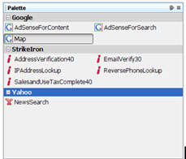
Figure 10. The REST Component Palette
Google Map and Yahoo News Search components are both REST-based; all StrikeIron components are SOAP-based. Currently, you can add components to the palette by creating modules with metadata information in a specific format (the format for such modules is beyond the scope of this article, however).
To demonstrate how to use these components, drag and drop the Google Map component into your CustomerResource class. A dialog will appear (see Figure 11), where you can customize the Google Map component. For the apiKey, enter the key which you obtained from Google (by visiting google.com/apis/maps/signup.html). You should also uncheck the Map to QueryParam checkbox for the apiKey, so it does not appear as a query parameter.
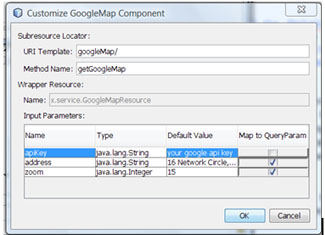
Figure 11. Customizing the GoogleMap Component
Click Ok and the plugin will generate a sub-resource locator called getGoogleMap() in the CustomerResource class. The plugin also generates a GoogleMapResource class with pre-generated code for invoking the Google Map API.
To have the Google Map keyed to the address of the customer, you need to modify the code as shown in Listing 4. Run Test RESTful Web Services again to test the modified application. Figure 12 shows the Test Client page. Notice that a new URI, /customers/1/googleMap is added to the Customer resource. If you click on the link, you’ll see the map shown in Figure 13.
| Listing 4. getGoogleMap() method |
@UriTemplate(“googleMap/”) |

Figure 12. Testing the GoogleMap Resource
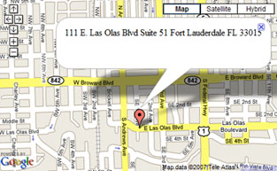
Figure 13. Google Map for Customer 1
Client library generation
To facilitate building client applications that access RESTful web services, the plugin supports generation of client libraries written in JavaScript. The generated libraries can contain three layers of abstraction. At the bottom layer is plain JavaScript code which can be consumed by JavaScript clients. The next layer provides support for the Dojo Ajax toolkit. The generated code is organized in a structure understood by Dojo and contains code for the Dojo store and widget abstractions. On the top is the jMaki layer, which is a wrapper around the Dojo layer.
In order to generate all three layers, you need to first install the jMaki plugin available in the download area of the ajax.dev.java.net website. This plugin will automatically install the Dojo libraries so you do not need to install these separately. (If you do not install the jMaki plugin, you’ll only be able to generate plain JavaScript code.)
To create the client library, you need to first create a web project, say “CustomerDBClient”. Also, make sure you add the jMaki framework as shown in Figure 14. Next, right click on the project node and invoke New>RESTful Web Service Client Stubs, to invoke the wizard shown in Figure 15.
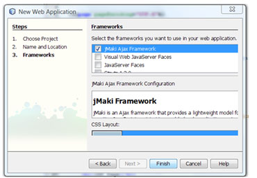
Figure 14. Adding the jMaki Framework
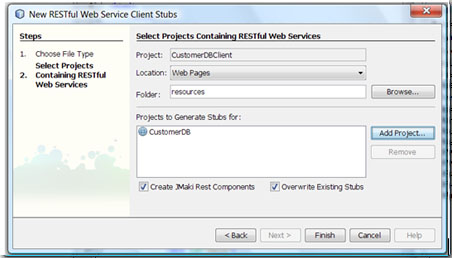
Figure 15. New RESful Web Service Client Stubs Wizard
Click on Add Project and select the CustomerDB project you created. Make sure the Create JMaki Rest Components checkbox is selected and click Finish. The plugin will generate all the necessary files in the project’s web folder.
You can test the generated client library by running the TestResourcesTable.jsp page, in the web/resources/dojo/rest folder (simply right click on the file and choose Run File). Figure 16 shows the result.
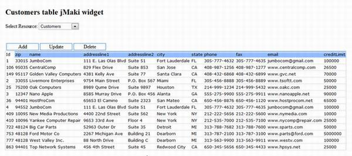
Figure 16. Example using jMaki
{kind=link}
You can also install the generated client library as a jMaki component in the jMaki palette. In the root directory for the CustomerDBClient project, there should be a CustomerDB.zip file already created when you create the client library. You can see it in the Files view of the IDE. Next, choose Tools>Palette>Add jMaki Library and select CustomerDB.zip. The jMaki plugin will add the jMaki components contained in this file to the jMaki palette, as shown in Figure 17. Finally, to test the component, simply drag and drop it into a JSP file such as index.jsp, and run it from the IDE.
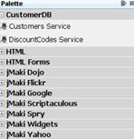
Figure 17. jMaki palette
REST Patterns |
The RESTful plugin currently supports three patterns. The Singleton pattern is useful for creating RESTful wrapper services around other services such as SOAP-based web services. For example, you can use this pattern to REST-enable existing SOAP-based services. This pattern has many additional uses. The Container-Item pattern is typically used for representing resources that have relationships, such as a database. We use this pattern to generate code from JPA entity classes. This “plain” Container-Item pattern lets you create an item resource using the POST method. The URI for the newly created item resource is determined by the container resource. The Client-Controlled Container-Item pattern is a slight variation. The difference is that there is no POST method on the container resource class for creating item resources. Instead, item resources are created using PUT on the item resource class. It’s called Client-Controlled because the URI for the item resource is determined by the client and not by the container resource. Amazon’s Simple Storage Service (S3) uses the Client-Controlled Container-Item pattern. |
Conclusions
In this article, we gave you an introduction to the world of RESTful web services, and the current efforts by JAX-RS and Jersey to standardize on a Java API for building such web services. We also showcased the RESTful Web Service plugin for NetBeans 6.0, which provides end-to-end support for building complete RESTful web services.
Links |
JSR 311 – JAX-RS: The Java API for RESTful Web Services Jersey, the open source JAX-RS (JSR 311) Reference Implementation for building RESTful Web services Prokect jMaki Web Application Description Language project |
Peter Liu is a staff engineer at Sun Microsystems, Inc. |